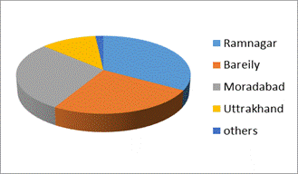

Paper Title :
INCIDENCE OF CHILD LABOUR:
A CASE STUDY OF NANDA DEVI FAIR IN NAINITAL
Abstract
This study examines the incidence of child labor at Nanda Devi fair, in Nainital, with respect to their socio-economic factors. With incidence of child labor, the family characteristics of working children were also investigated. Some of the questions pertaining to the loss of childhood of these working children have been raised. The association between these factors and learning outcomes is also examined within the stipulated constraints. The study can be used for making some effective policies, related to their educational and social development to fill the gap between reality and hope for removing the menace of Child Labor. One of the key objectives of the study was to understand and analyze various factors that cause children to get involved in work at a tender age. A wide range of factors may actually be involved in making a child work and often it is the combined effect of these factors. However, some of these factors are believed to have a direct link with the incidence of child labor. This study made an attempt to understand the causal relationship between the literacy and income of the household with the involvement of children in work. Moreover, the study throws light, on future prospects of working children and gives some suggestions to save the precious childhood.
Author:
Ms. Neha Atri
Ph.D. Scholar- Economics
D.S.B. Campus, Naintial
Kumaun University, Nainital, Uttarakhand, India
Paper Transcript of Paper Titled :
INCIDENCE OF CHILD LABOUR
A CASE STUDY OF NANDA DEVI FAIR IN NAINITAL
Incidence of Child Labour
A case study of Nanda Devi Fair in Nainital
Ms. Neha Atri
Ph.D. Scholar- Economics
D.S.B. Campus, Naintial
Kumaun University, Nainital, Uttarakhand, India
Abstract— This study examines the incidence of child labor at Nanda Devi fair, in Nainital, with respect to their socio-economic factors. With incidence of child labor, the family characteristics of working children were also investigated. Some of the questions pertaining to the loss of childhood of these working children have been raised. The association between these factors and learning outcomes is also examined within the stipulated constraints. The study can be used for making some effective policies, related to their educational and social development to fill the gap between reality and hope for removing the menace of Child Labor. One of the key objectives of the study was to understand and analyze various factors that cause children to get involved in work at a tender age. A wide range of factors may actually be involved in making a child work and often it is the combined effect of these factors. However, some of these factors are believed to have a direct link with the incidence of child labor. This study made an attempt to understand the causal relationship between the literacy and income of the household with the involvement of children in work. Moreover, the study throws light, on future prospects of working children and gives some suggestions to save the precious childhood.
Keywords- labour; chillabour; nainital; nanda devi; fair;
Introduction
“Bestow blessings on those Little, innocent lives Bloomed on Earth, Who have brought the message of joy from heavenly garden”.
-Rabindranath Tagore
Children are the greatest gift to humanity and Childhood is an important and impressionable stage of human development as it holds the potential to the future development of any society. Children who are brought up in an environment, which is conducive to their intellectual, physical and social health, grow up to be responsible and productive members of society. Every nation links its future with the present status of its children. By performing work when they are too young for the task, children unduly reduce their present welfare or their future income earning capabilities, either by shrinking their future external choice sets or by reducing their own future individual productive capabilities.
Under extreme economic distress, children are forced to forego educational opportunities and take up manual jobs which are mostly exploitative as they are usually underpaid and engaged in hazardous conditions. Parents decide to send their child for engaging in a job as a desperate measure due to poor economic conditions. It is, therefore, no wonder that the poor households predominantly send their children to work in early ages of their life. One of the disconcerting aspects of child labor is that children are sent to work at the expense of education. There is a strong effect of child negatively associated with his or her capacity to attend school. Child labor restricts the right of children to access and benefit from education and denies the fundamental opportunity to attend school. Child labor, thus, prejudices affects their health and safety.
In recent times there has been a renewed attack on child labor citing grounds of physical, moral and psychological trauma for the children and loss of childhood. Such arguments have been stimulated by recent debates on human rights, human capital formation and international labor standards. It is argued that child labor exists in developing countries because there are both demand for and supply of it. Faced with poverty, inequality social norms, credit-land-labor market imperfections, high fertility and unpredictable employment scenario children are sent to work in most cases by their parents.
The supplementary income of children raises their nutritional standards, enables their siblings to continue education and enhance their skill and future prospect of employment. On the other hand producers demand child labor because of substantially lower wages paid to children. Therefore child labor exists. The incidence of child labor is accepted either as an undesired reality or as an unavoidable necessity.
Background of Study
In India, the problem of child labor is well recognized. There are varying estimates of the number of working children in the country due to differing concepts and methods of estimation. Children are engaged in various types of work, including those that are classified as 'hazardous', i.e. harmful to the physical, emotional, or moral well-being of children. An estimated 2 million children work in hazardous industries. Although there are inter-state and inter-regional variations in India, the factors that generate child labor, and hazardous child labor in particular, include parental poverty and illiteracy; social and economic circumstances; lack of awareness; lack of access to basic and meaningful quality education and skills; high rates of adult unemployment and underemployment, and cultural values of the family and society.
The problem of child labour continues to pose a challenge before the nation. Government has been taking various pro-active measures to tackle this problem. However, considering the magnitude and extent of the problem and that it is essentially a socio-economic problem inextricably linked to poverty and illiteracy, it requires concerted efforts from all sections of the society to make a dent in the problem.
According to the Census 2001 figures there are 1.26 crore working children in the age group of 5-14 as compared to the total child population of 25.2 crore. There are approximately 12 lakhs children working in the hazardous occupations/processes which are covered under the Child Labour (Prohibition & Regulation) Act i.e. 18 occupations and 65 processes. As per survey conducted by National Sample Survey Organisation (NSSO) in 2004-05, the number of working children is estimated at 90.75 lakh. As per Census 2011, the number of working children in the age group of 5-14 years has further reduced to 43.53 lakh. It shows that the efforts of the Government have borne the desired fruits. Poverty emerges to be necessary condition thereby preparing the breeding ground but not sufficient to drive the children to the labor market. Lack of Educational infrastructure is found to be very important in this respect. This includes not only the physical but also the human component, which is emerging to be more crucial. Poverty alleviation programmes must therefore be complemented by expansion of educational infrastructure for eradicating child labor.
Study Area: Nainital and Nanda Fair
Nainital is a popular hill tation in the Indian state of Uttarakhand situated at an altitude of 2,084 metres (6,837 ft) above sea level in the Kumaun foothills of the outer Himalayas. Nainital’s unending expense of scenic beauty is nothing short of a romance with awe-inspiring and pristine mother nature which attracts tourists almost all of the year.
The Nandadevi fair has its religious value & it is held at Almora, Nainital, Kot (Dangoli), Ranikhet, Bhowali, Kichha and also in the far flung villages of lohar (like Milam and Martoli) and Pindar valleys (like Wachham and Khati). In Nainital and Almora thousands take part in the procession carrying the dola (or litter) of Nanda Devi. It is said that the Nanda Devi fairs started in Kumaon during the reign of Kalyan Chand in the 16th Century. A three day fair is held at Kot ki mai or Kot bhramari devi. The fair is rich in folk expressions and many village products are brought for sale. The fair attracts tourists as well as pilgrimage and most importantly the bread winners who come to the fair to seek temporarily employment. Economic significance of the fair is most important as being religiously important fair for hindus, this fair extraordinarily involves people belong to every sect and religion. Despondently, there was a high incidence of child labour in the fair, which engrossed this research study.
Objective of the Study
The main objectives of the study were to:
• Examine the incidence and socio economic background of child labor involved in economic activities in Nanda fair.
• Examine the family characteristics of children as depicted by them;
• Examine the reasons behind compelling them to work in this innocent age;
• Analyze their earnings and savings by them;
• Examining their educational pursuits.
• Present an overview regarding their future prospects and loss of their childhood which is a matter of concern in the present scenario.
Methodology
The study is based on primary data as survey was conducted in 3 days of Nanda fair, in Nainital. There were 60 respondents sample which was selected as Convenience Sampling Method selected purposively and non-randomly. All working children of age 5-14 in the fair has been taken as Universe (Population). The size of the sample was taken 60 (sixty) for the convenience and availability of short time period.
Interview schedules were administered as tools for the study. In study, ‘Observation’ is also used as a tool to cross-check the information told by the informants. Microsoft Excel was used for the analysis of data.
To understand child labour this definition is universally accepted. “Child labor is defined as the children in the age group of 5-14 years who are either self-employed or are wage workers. Here usual principal status is considered
Hypothesis
Compelling circumstances and family mores and tradition cause child labor of varying character and intensity. A high prevalence of child labor is linked to poverty and to poor quality or availability of education. Children in poor families work because the family needs the extra income. It is assumed that most of the child labour is from Nainital district and/or state of Uttrakhand.
Salient Characterstics of Child Labour in Nanda Fair
Interviewing to the working children, encapsulated the socio economic background of the children. The interview schedule formed an important component of this study because one can infer the socio economic condition and the aspects which actually compelled a child to work. The educational decisions are governed by the domestic circumstances whether to send a child to school or not, and whether and when to withdraw a child from school. In India, especially in the poor sections of the community, child labor cannot be taken in isolation. It has to be seen in the wider social context. Thus both home and child factors are important for determining the educational status and attainment of the child.
Working Children inward movement to Nanda Fair
Findings of the observation showed the high incidence of child labor in the fair. Mostly the illiterate, semi-skilled and manual child workers have been coming in search of better short term employment opportunities to Nainital to earn in Nanda fair. Figure 1 shows that the areas from where they came are nearby vicinities of Nainital, the highest percentage is from Ramnagar and Moradabad the areas of State of Uttar Pradesh. The findings nulls the hypothesis that the child labour in the fair belongs to Uttrakhand State are far above the ground.

Figure 1: Areas from where Child Labour of Nanda fair belong
Details of working children in the age group of 5-14 years as per Census 2001 and Census 2011 are as under
Table 1: Census data : Govt of India
|
|
No. of working children in the age group of 5-14 years |
|
:Sl. No. |
Name of State/UT |
Census 2001 |
Census 2011 |
1 |
Uttar Pradesh |
1927997 |
896301 |
2 |
Uttarakhand |
70183 |
28098 |
3 |
India |
12666377 |
4353247 |
Table 1 shows that in Uttrakhand there are lesser child labour than Uttar Pradesh But still the figure has some value and actions should be taken appropriately.
Type of Family
In Figure 2, the pie diagram, blue area shows the households having joint family and red area shows households having nuclear family. There were very few orphans. And it is obvious from the pie chart that households having joint family are less in numbers than households having nuclear families. It is important to notice that the size of the family with insufficient income may compel a child to work for earning his/her own living to fulfill various needs. A larger family size implies higher dependency ratio, making it difficult to afford the education of all the children and pay due attention to them.
Figure 2
Religious Composition
Religion put measurable effect on society beliefs and their living style. Field survey reveals that there are more Muslims working in Nanda Devi fair while Hindus are relatively less and there are negligible Sikhs and Christians. It is clearly shown in figure 3 where x axis represents the no. of child workers and y axis represents different religions. The finding shows muslim community participation in Hindu festival, which is really a good sign for cordial relations among the different religions in Nainital.
Figure 3
Work Summary of Child Labour
It is very sad that in which age they deserve to be cared loved and social-educational development, they are working for their survival. It is a shame for the society that child labor persists. The survey in the fair shows that the average age of child when he starts working is 10.19 which is really very low and a matter of concern.
Table 2
Age of starting work |
||||
S.No. |
Age |
No, of child worker (Fi) |
M.P. (xi) |
Fixi |
1 |
5—8 |
9 |
6.5 |
58.5 |
2 |
8—11 |
22 |
9.5 |
209 |
3 |
11—14 |
21 |
12.5 |
262.5 |
|
Sum |
52 |
28.5 |
530 |
Average age of started working =10.19 |
||||
The worst fact came in light in the study was their working hours .The average working hours of child workers are 9.5 hours. Some children are working more than 12 hours which shows their vulnerable position.
Table 3
Working hours of children |
||||
S.No. |
Stipulated Hours |
No, of children (Fi) |
M.P. (xi) |
Fixi |
1 |
2—4 |
4 |
3 |
12 |
2 |
4—6 |
4 |
5 |
20 |
3 |
6—8 |
8 |
7 |
56 |
4 |
8—10 |
11 |
9 |
99 |
5 |
10—12 |
10 |
11 |
110 |
6 |
12—14 |
15 |
13 |
195 |
|
|
52 |
|
492 |
|
Average length of service =9.5 |
|
|
|
(Formula used for drawing average in Table 3, 4 and 5 is
Average= Sum of fixi/ N)
M.P.-Mid point denoted by xi
Fixi- Multiplication of fi (no. of children) and xi (M.P.)
N- Total No. of child workers
Note: Only 52 respondents were taken for this analysis as rest of 8 were of age of 14.5 approximately.
Child labour deprived of Education
Table 4 illustrates that 76.7 child workers left school for work and only 23 percent retaining school with work. The poor condition of family income left many child in the dearth of education.
Table 4
Percentage of school going children+ |
|||
S.No. |
Feature |
No, of Children |
Percentage |
1 |
School going children with work |
14 |
23.3 |
2 |
only working |
46 |
76.7 |
3 |
Total |
60 |
100 |
Prevailing Bad Habits in Child Labour
Poor child labor who lost their childhood is also victimized by social evils and having bad habits like consuming gutkha (Tobacco), smoking and drinking. In figure 4 blue part of pie chart indicates child workers having bad habits which are approximately 80 percent. Bad habits advance the adverse effects on health
Figure 4
Children having idea of leaving work
Figure 5 depicts that majority of child labor of Nanda fair have no idea of leaving work for education. It shows their lost hope and interest in education. Approximately 51 percent of children still hope that they will leave work after the fair or if their family conditions improve. No matter how much hardship life brings, there is still a faith, which gives them strength to keep walking on hard path.
Figure 5
Poor savings of poor child workers
The poor is so poor to save as they even lack the subsistence and child labor is the result of poverty and insufficient income. Figure 6 throws light on this fact as blue portion of the chart illustrates no saving, means majority of child labor are unable to save a part of their income for themselves.
Figure 6
Constitutional Provisions for Child Labour
Our Constitution makers were wise and sagacious to provide, that children should receive distributive justice in free India. The rights against exploitation were mentioned in the draft proposed by Dr. B.R. Ambedkar, K.M. Munshi and K.T. Shah. Constitution of India contains provisions for survival, development and protection of children; these are mainly included in Part III and Part IV of the Constitution, i.e., fundamental rights and directive principles of state policy. India follows pro-active policy towards tackling child labor problem.
The concern for children in general and child labor in particular is reflected through the Articles of the Constitution of India. In Article 23, it prohibits traffic in human being and beggar and other similar forms of forced labor. Under Article 24 it has laid down that “no child under the age of 14 years shall be employed to work in any factory or mine or engaged in any other hazardous employment”. Article 39(e) and (f) requires the State and secure that the tender age of children are not abused and to ensure that they are not forced by economic necessity to enter avocations unsuited in their age or strength. Those children are given opportunities and facilities to develop in a healthy manner and conditions of freedom and dignity and that childhood and youth are protected against exploitation and against moral and material abandonment. Article 45 provides, for free and compulsory education for all children until they complete the age of 14 years. Article 51A(k) makes it a fundamental duty of the parent or Guardian to provide opportunities for education to the child or ward between the age of 6 and 14 years. Art. 21-A recognizes that the Right to Education as fundamental right and it mandates that, the state shall provide free and compulsory education to all children of age of six to fourteen years in such manner as the state may, by law, determine.
Legal Regulation of Child Labor in India
The Child has been the subject of special laws and legal provisions. Because of its tender years, weak physique, and inadequately developed mind and understanding, every child needs protection against moral and physical harm and exploitation by others. In the formative years of its life, the child needs special care service to realize its full potential for growth and development. There are about 300 Central and State Statutes concerning children. These have been enacted with an intention to protect and help children and achieve the goal of child labor welfare enshrined in our National charter.1 Further these laws are applicable to children in various spheres of life, which are regulatory, protective and correctional in nature. Laws are seeking to protect and promote the rights of child. Under the law, children are entitled to special care, assistance and essential needs and they should be given the highest priority in the allocation of resources.
Legislation to control and regulate child labor in India has existed for several decades. Legislations have sought to address two broad concerns; (1) Prescribing minimum age limit for employment of children and regulation of working hours for children; and (2) Ensuring the health and safety of the child laborers by prohibiting the employment of children in hazardous work. Several statutory provisions prohibiting child labor and protecting interests of children of tender age working as a child labor have been enacted before and after independence to fulfill the commitment to international community and to oblige the mandate provided under Constitution to eradicate the evil of child labor.
There are number of child labor legislations prohibiting the employment of children below 14 years and 15 years in certain specified employments. However, contrary to our international commitment and all proclamations in the country’s Constitution, and despite all the legislative measures, child labor is a harsh reality. Due to lack of political will and in absence of realistic measures to tackle the problem.
A Gap in the Implementation
From the above provisions, it is clear that the Government has taken cognizance of child labor as a major social problem in India, and is taking a number of steps to eradicate it. Although nothing can be predicted about the potential success of this legislative intent, it must be admitted that the efforts are steps in the right direction. Unfortunately the things are not doing up to the mark. The response of the Government and judiciary with regard to Child Labor in India is highly commendable.
Conclusion
Based on the survey data, following observations are noticeably revealed.
1. High incidence of child labour is found in Nanda Devi fair, in Nainital
2. Most of the Children belong to joint family and belong to Muslim community, whvich actually opposite of the assumption that the fair of Hindu deity can attract only Hindu workers.
3. Importantly, nearly 85 percent children came from nearby areas of Nainital and falls under UP state, which nulls one hypothesis that the fair in Uttrakhand region is attracting majorly child worker belong to Uttrakhand state.
4. Most of the children said that they don’t have pucca houses & don’t have toilet facilities and hygienic at home, which make it obvious that their lifestyle prominently welcomes diseases.
5. The percentage of child labor in work demand more than 8 hours is highest. Average stipulated hours of working came to be 9.5 hours. This clearly indicates the need for specific interventions that have not been brought under the notification process yet.
6. Most of the working children started working in tender age of 9 or earlier. And more than 72 percent left schools due to poor family income.
7. Over 50% of the children said that they don’t go to school because they could not afford education. This came out as a more important reason than the lack of interest in schooling. Also, around 14% clearly said that the child was required to work to supplement the family income and hence, don’t have time for school.
8. Negligible percentage of working children (5-14 years) said that they had received any kind of training for developing their skills.
9. Nearly 60 percent of children are getting victimized of bad social environment and prone to be indulging themselves in bad habits.
10. Child labor supplementing their families by their income so unable to save for themselves due to inadequate earnings.
11. Very few have idea of leaving work for study till their family conditions improve, while most of them have no idea to be out of this vicious circle of labouring.
By seeing conclusions we can infer that the hypothesis made for the study stands true as a high prevalence of child labor is linked to poverty and to poor quality or availability of education. Children in poor families work because the family needs the extra income. It is assumed that poor households with no savings and assets and inability to borrow have no choice but to send their children out to work. As parent’s income rise they are able to send their children to school rather than to work. The more revelations tell that, mostly child workers are stuck in the vicious circle of work and having no clue to be free from the menace.
Future a Matter of Concern
Expressed in a generalized sense, the above factors constitute building blocks of a vicious circle of continuing educational underdevelopment and are sustained by each other. To achieve a virtuous circle of development, a straightjacket approach of achieving demand and supply equilibrium has neither worked in the past, nor would work in the future. As the regions/social groups progress towards universal participation, the strategies to meet the basic learning needs of the marginalized groups of population require an approach which is future-oriented rather than extension of the established practices meant for some other groups of population.
"Poverty is not only a problem of low incomes; rather, it is multi-dimensional problem that includes low access to opportunities for developing human capital and to education". Slum children too face educational deprivation in terms of accessibility and quality as well.
Recommendations
Even though the Indian government has launched various programmes and projects to meet the basic learning needs of all children, the reality is far short of expectations. In India, the state governments are responsible for the implementation of educational reforms in school education. The Indian states have considerable autonomy to establish their own priorities between and within the development sectors and allocate the financial and other resources accordingly.
The intervention strategy of the project consists of developing a comprehensive child labor elimination model for India by integrating four components. These are
1) Strengthening public education as a measure to prevent child labor;
2) Providing vocational skills training to adolescents in the age group of 14-17 years. Obviously, the vocational training programs that can help the children develop skill-sets for the future and help many of them come out of low-pay, hazardous work have not reached out to the children that need them the most. The “proportion of children trained” should be selected as one of the key indicators to measure the performance of child rehabilitation programs.
3) Monitoring the impact of child labor elimination efforts by tracking each beneficiary on the one hand and developing a child labor monitoring system on the other, to capture the shifts in child labor across different sectors and providing income generating opportunities to the families of child labor.
4) In addition, it seeks to support various initiatives aimed at ending child labor through social mobilization and increasing awareness. This is combined with the building of capacities and training of government agencies and civil society partners. Mobilization of key actors at the state and district level:
5) Review of the implementation framework and the existing rationalization plans of the government department, as well as the guidelines for the selection and capacity building of NGOs and social workers working for child labor.
References
[1] Aggarwal Yash&Jha,M.Mritinjay, Primary Education in Rural Haryana,National Institute of Educational Planning and Administration New Delhi, 2001
[2] Aggarwal, Y.P, Primary Education in Delhi! How Much Do the ChildrenLearn? National Institute of Educational Planning and Administration NewDelhi, 2000
[3] Aggarwal, Yash, Trends in Access and Retention - A Study of Primary Schoolsin DPEP Districts, Educational Consultants India Ltd, 1999
[4] Ahemad, M., Chaudhary, A., and Karush, D., “A Review of Quality of Work Life Balance for Women Employees: A Casestudy of working women in academics”, International Journal of Trends in Economics Management and Technology (IJTEMT), Vol II Issue 1, February 2013, ISSN: 2321-5518.
[5] Ali Sabir, Environment and Resettlement Colonies of Delhi, HarAnandPubliations, New Delhi, 1995.
[6] Ashraf, M.S., and Papola,T.S., Problems of Non-Enrolment, Non-Attendance andDropouts in Schools : Study in Uttar Pradesh, Giri Institute of DevelopmentStudies, Lucknow.1986
[7] Atal Yogesh (ed.), Perspectives on Educating the Poor, New Delhi, AbhinaPublications, Delhi, 1997.
[8] Banerji, Rukmani, Poverty and Primary Schooling, Field Studies from Mumbaiand Delhi, Economic and Political Weekly, March 4, 2000, pp 795-802
[9] Banerji, Rukmani, Why Don’t Children Complete Primary School? A CaseStudy of a Low Income Neighbourhood in Delhi, Economic and PoliticalWeekly, August 9, 1997, PP 2053-2063.
[10] Bhatty, Kiran , Educational Deprivation in India - A Survey of FieldInvestigations, Economic and Political Weekly, July 4, 1998 & July 11, 1998.
[11] Bisht, A., Joshi, A., and Pant, H., “Role of NGO’s for Eradication of Rural Poverty Through Women Empowerment: Case Study Reference of MATREE Tonk District of Rajasthan”, Internaitonal Journal of Trends in Economics Management and Technology (IJTEMT), ISSN: 2321-5518, Vol II, Issue I, Feb 2013, pp- 33-36.
[12] Bose, Ashish, Urbanisation and Slums (Ed) Prodipto, Roy and Shangon, DasGupta : Urbanisation and Slums, HarAnandPubliations, New Delhi, 1995
[13] Census of India, 1971, 1981, 1991, 2001 Final Population Totals, Serioes-1,Paper 1 of 1992, Vol. 1 and 2 and II NICNET Census Series, 1993.
[14] Chakarabarty, Vandana, Education of the Urban Disadvantaged, MHRD &NIEPA, New Delhi, 2000.NIEPA Occasional Paper58
[15] ChughSunita Educational Status of Children in Urban Slums With Reference toAvailable Educational Facilities : Acase Study of Sanjay Colony of OkhlaPhaseII, Ph.d Thesis, New Delhi, 2002
[16] Govinda, R and Varghese, N.V : Quality of Primary Schooling in India : ACase Study of Madhya Pradesh, IIEP, Paris, 1993.
[17] Govinda, Rangachar, Status of Primary Education of the Urban Poor in India -An Analytical Review No. 105, Research Report, UNESCO, 1995
[18] Jangira, N.K.&Yadav,D.D Learning Achievement of Primary School Childrenin Reading and Mathematics, NCERT,1994
[19] JhaJyotsana&JhingranDhir Elementary Education for the Poorest and otherDeprived Groups: The Real Challenge of Universalisation, Center forPolicy Research, new Delhi, 2002.
[20] Joshi, G., “Child Rights in India: A Light on the Role of NHRC in Implementing Them”, Internaitonal Journal of Trends in Economics Management and Technology (IJTEMT), ISSN: 2321-5518, Vol IV, Issue VI, December 2015, pp- 21-29.
[21] Joshi, G., and Atri, N., “Societal Sensitization Regaring Women Rights in India: What more to be done?”, Internaitonal Journal of Trends in Economics Management and Technology (IJTEMT), ISSN: 2321-5518, Vol V, Issue II, April 2016, pp- 01-04.
[22] Juneja, Nalini, Primary Education for All in the City of Mumbai, India: TheChallenge Set by Local Actors, NIEPA, New Delhi, 2000.
[23] Kingdon, Geeta, G, How Much do School Matter to Pupil Achievementin India, Journal of Educational Planning and Aministration, Vol 12(1),NIEPA, New Delhi, 1998.
[24] Kuthari, O.P et al, A study of Access, Retention and Achievement in Malhotra,D.D, Synthesis of the UBSP Benchmark Survey, Vol I, National Institute ofUrban Affairs, New Delhi, 1997
[25] Mukhopadhyaya S and Suri I.S. Efforts of the Government for PrimaryEducation of the Poor in the Mega City of Delhi. Paper presented at a Seminaron Indian Mega Cities and Primary Education of the Poor, NIEPA, NewDelhi, September 2-4, 1998.
[26] Nayar, Usha et.al, Factors for the Continuance and Discontinuance of Girls inElementary Education, Project Report, NCERT, 1997
[27] Parwal, R., Verma, S., Chaudhary, A., and Pandey, U., “Corporate Social Responsibilities- Past Indian Scenario in the Year 2012”, International Journal of Trends in Economics Management and Technology (IJTEMT), Vol I Issue V1, December 2012, pp 28-33, ISSN: 2321-5518.
[28] Panchmukhi, P.R., Private Expenditure on Education in India : AnEmpirical Study, India Institute of Education, Pune, 1990.
[29] Prakash ,Shri, Use of Sample Survey Techniques to Study Problems ofEducation of Children of Delhi and Bombay Slums, Research Project Report, of NIEPA, 1997
[30] Prakash Ved, Gautam,S.K.S&Bansal,I.K Scholastic Attainment under MAS: AnAppraisal, NCERT, 2000
[31] Public Report on Basic Education in India. The PROBE Team, OxfordUniversity Press, New Delhi, 1999.
- AUTHORS PROFILE
- Authors is presently a Ph.D Research Scholar (Economics) of Kumaun Univeristy, Nainital.